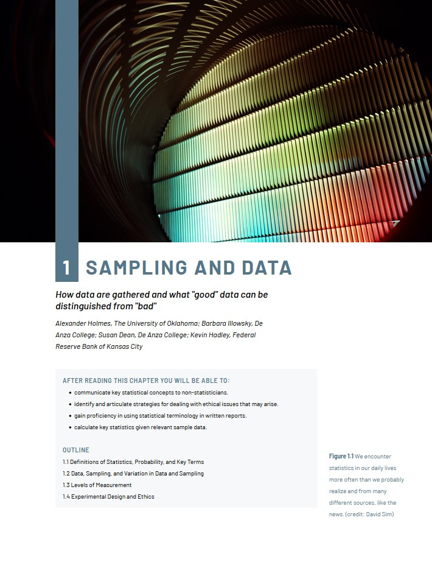

Paged Design
Customisable themes for book design with CSS
Are you creating books with HTML and CSS? Stylesheets for books can be long and complicated to write. Paged Design is a framework for creating and adapting themes.
Note that these demos only work in a Chrome browser, and that paged.js and this project are in development, so expect bugs, workarounds, and exciting possibilities, and contribute if you can.
Themes
Some themes work (or work best) with specific content, because a theme must be created for a particular HTML structure. Click 'Preview' below for each theme to see it with its most appropriate content.
-
Beatrix

Named for Ms Potter, a classic children's book theme for simple stories. Goes well with Alice in Wonderland.
-
Density

A space-age look for big books. Goes well with The Future of Ideas, by Lawrence Lessig.
-
Plastered

A wild and wonky look for grabbing attention. Goes well with Little Brother, by Cory Doctorow.
-
Apollo

An elegant, conservative A4 textbook design for the Ketida platform. Works with our Ketida sample content.
-
Aphrodite
A bright and wavy textbook design for the Ketida platform. Works with our Ketida sample content.
-
Demeter
A smart, sleek textbook design for the Ketida platform. Works with our Ketida sample content.
-
Gaia
A gentle, quirky textbook design for the Ketida platform. Works with our Ketida sample content.
-
Zeus
A strong, blocky textbook design for the Ketida platform. Works with our Ketida sample content.
-
Template

A plain template with very few opinions, and the starting place for creating brand new themes. Goes well with our typography samples.
These are just a small start. If you're interested in more themes, tell us so that we know it's worth investing time in more theme development.
Sample content
This demo site includes various pieces of sample content for seeing themes at work:
- A book of sample features common to most books
- Alice in Wonderland
- The first chapter of Little Brother, by Cory Doctorow
- The first chapter of The Future of Ideas, by Lawrence Lessig.
- Sample content from the Coko Foundation's Ketida platform, derived from an OpenStax textbook.
For each one, use the theme-selector dropdown to see the browser lay out the book in a new design before your eyes. (Only Chrome can get this right currently.)
How to use this framework
See the guidance on GitHub.
About
This project is maintained by Electric Book Works, and made possible by funding and encouragement from Adam Hyde, the Coko Foundation, and the Shuttleworth Foundation.
You can get the code and contribute on GitHub.